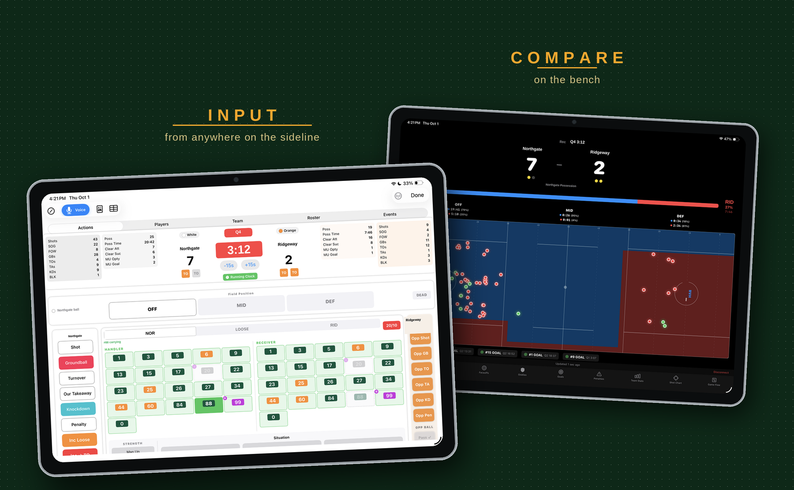
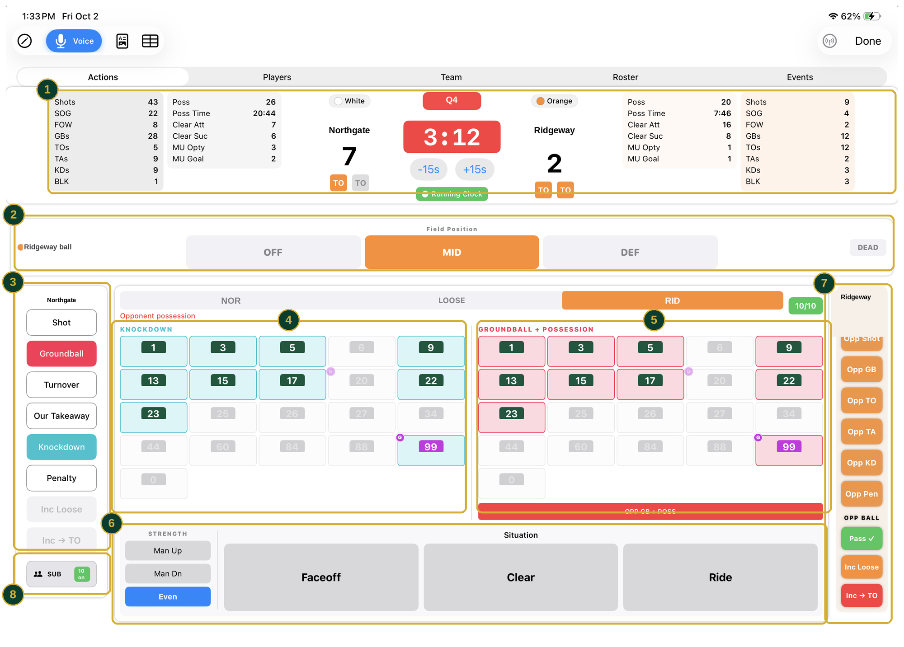
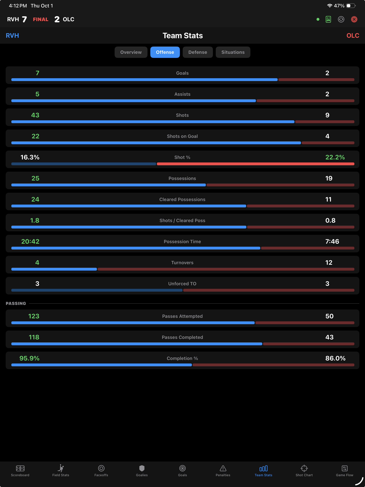
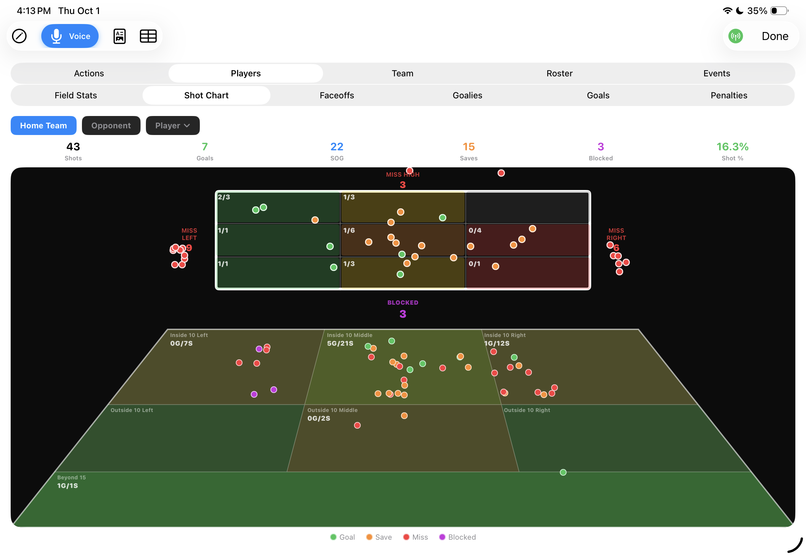
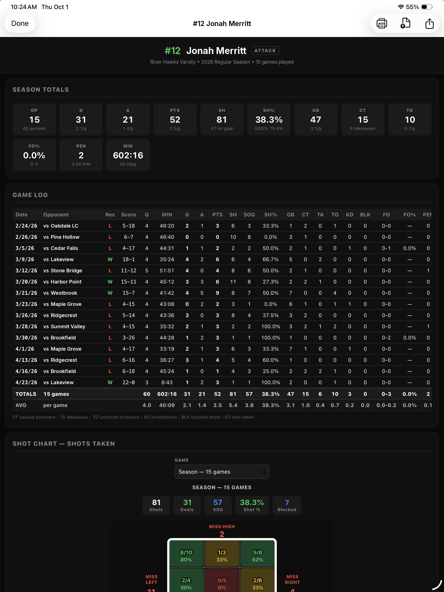

Track the game as it happens, then watch both teams compared on every metric that matters — possession time, turnovers, clears, shooting — live, while you can still change something.

assets/lacrosse-hero.pngThe buttons change with the game, so the next tap is the one you need.

assets/lacrosse-faceoff.pngBoth teams, every metric, while you can still do something about it.

assets/lacrosse-compare.pngWhere they came from, and where in the net they went.

assets/lacrosse-heatmap.pngOne game, then twenty.

assets/lacrosse-report.pngA full season with beta coaches running real games before it ever reached the App Store.
No accounts, no cloud sync, no signal required. The only thing that leaves the device is the report you choose to send.
Add players with numbers and positions so face‑offs, ground balls and shots all attribute correctly.
Teach it the names you actually shout across the field.
Mirror the game to an iPhone or a second iPad so the bench can follow along.
Face‑off percentage and possession time update as the game goes, not after it.
Most fields have no usable wifi. This one does not need any.
Readable for the team, raw for you.
Face‑offs, ground balls, clears and time of possession are the spine of a lacrosse game, and most stat apps treat them as afterthoughts. Coaches Box Lacrosse is built around them. Download it and track your next game.